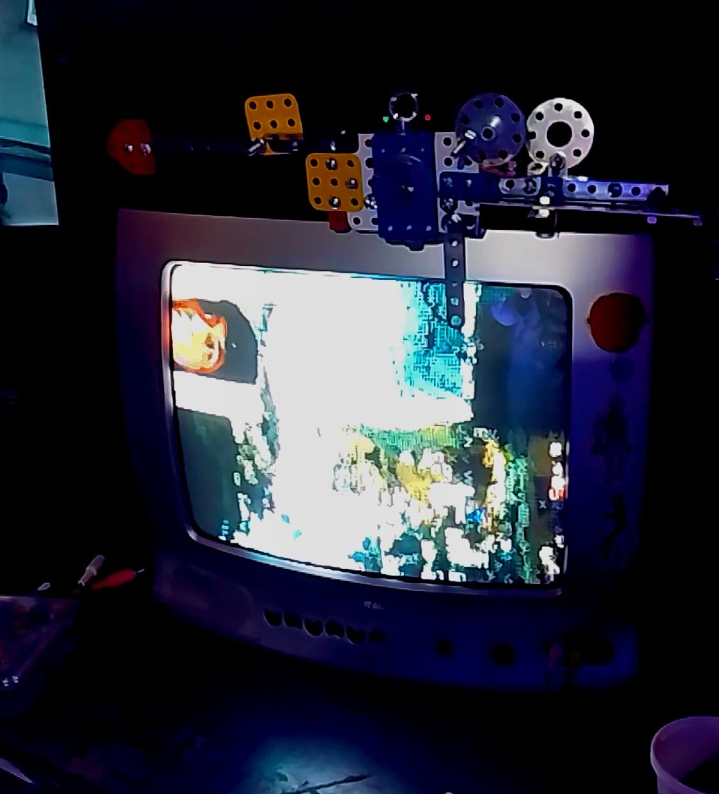
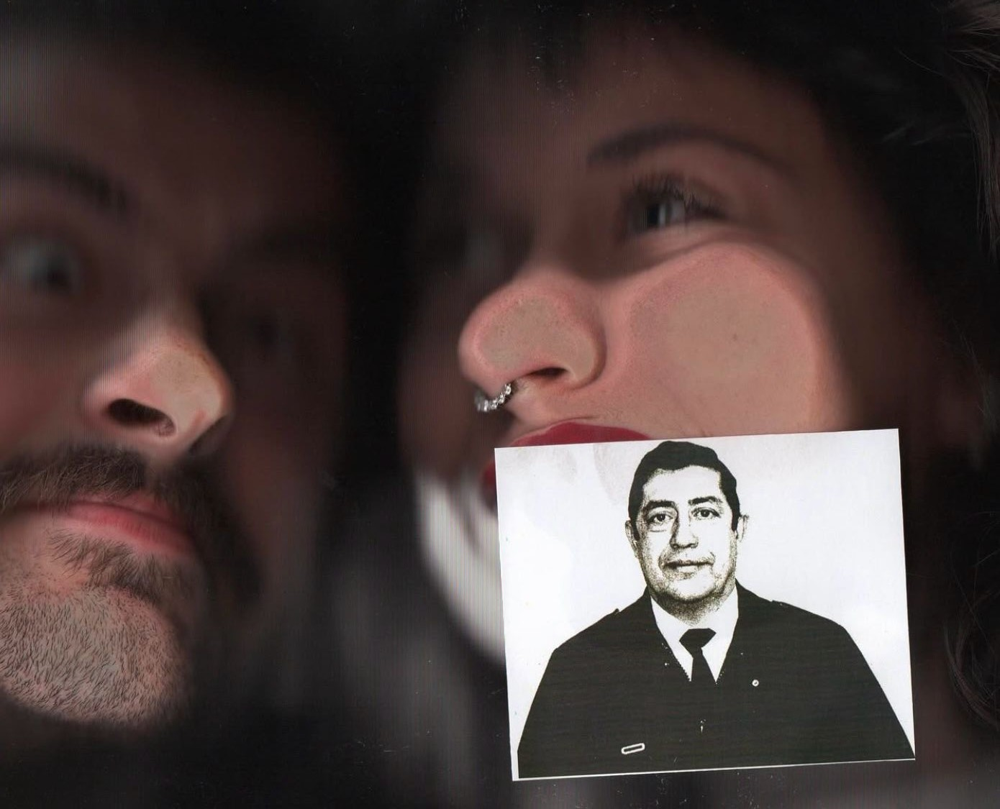
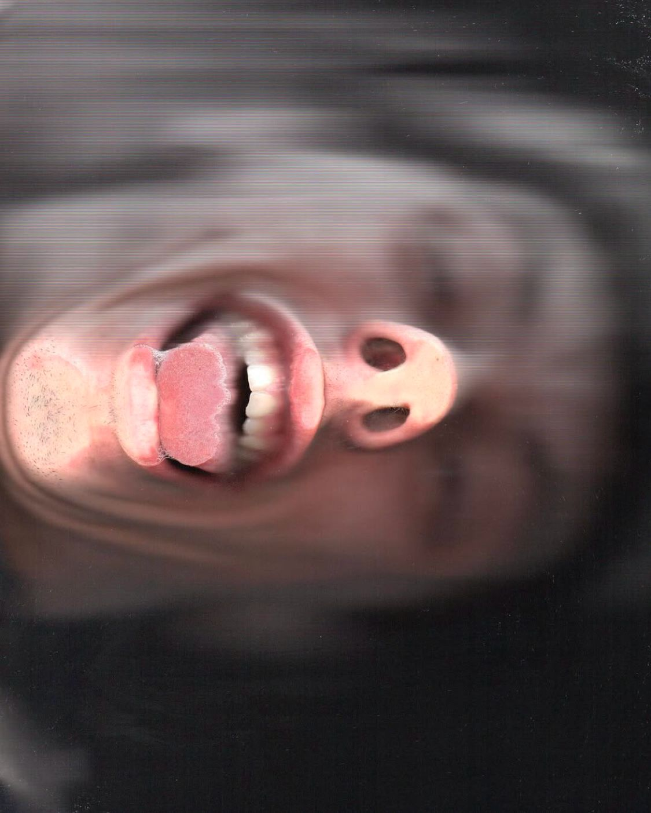
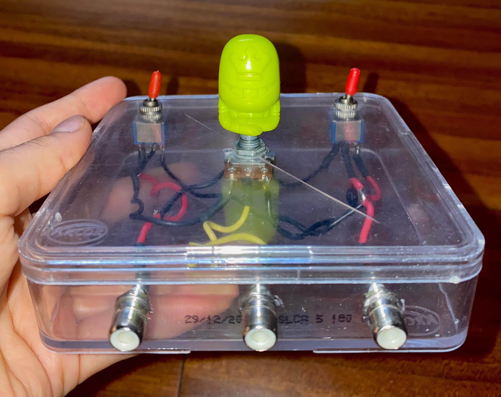
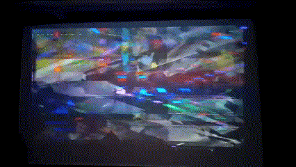

Cybersecta
Instalación piloto
Esta corresponde a la primera instalación trabajada con todos los miembros de Cybersecta, donde se exploraron los posibles procesos de captación de imágenes y su posterior procesamiento por medios informáticos y/o analógicos el 04/11/2023 para la 2ª edición de Kunka Festival.

Consta de:
-
Televisión de tubo, web cam y computadora para procesar las imágenes a cargo de PePontoRojas: exploración del procesamiento de imágenes en tiempo real, intervenidas con medios programables. Conclusiones: a la gente le encanta mirarse.

-
Scanner a cargo de Prensuti: exploración del dispositivo y la performatividad que involucra al espectador activo recostando el rostro sobre el vidrio del scanner. Ganancias a la gorra.
  -
Dirty mixer, video casettera, DVD y televisor a cargo de Maligna y Sospechosa: exploración de medios electrónicos con la producción casera de la dirty mixer como dispositivo de generación de "errores" y la intervención de imágenes dadas por las películas reproducidas en su mezcla glitcheada. La perilla GOGO hace la diferencia.
 
Ideas y bocetos
Nuestro equipo trabajó arduamente en ideas para las instalaciones. Entre ellas llegaron bocetos y mapas de planificación muy elocuentes:

Esta idea fue descartada por fines prácticos y de salubridad. No intentar en casa.
Este configura el boceto más fidedigno de la instalación para los tres dispositivos.